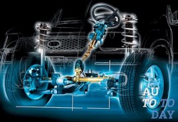

Ремонт рулевого управления - основные неисправности
Когда Вы садитесь в автомобиль, то первым делом беретесь за руль. Сегодня способ управления транспортным средством единственный – это рулевое управление. Помимо руля, в автомобиле есть еще педали, рычаг, способ переключения передач. Все эти элементы являются частью рулевого управления, они могут быть разными у разных моделей машин, но всегда неизменным остается рулевое устройство.
Иногда в престижном автосалоне продаются такие прототипы машины, в которых можно поменять руль на рычаг или поворотный джойстик. Также предпринимались попытки установки дистанционного или голосового управления. Но эти технологии не прижились, так как очень важную роль играет психологический фактор. Если в системе произойдет сбой, то его последствия могут быть трагическими. Рулевое управление должно быть очень надежной, безопасной и безотказной системой.